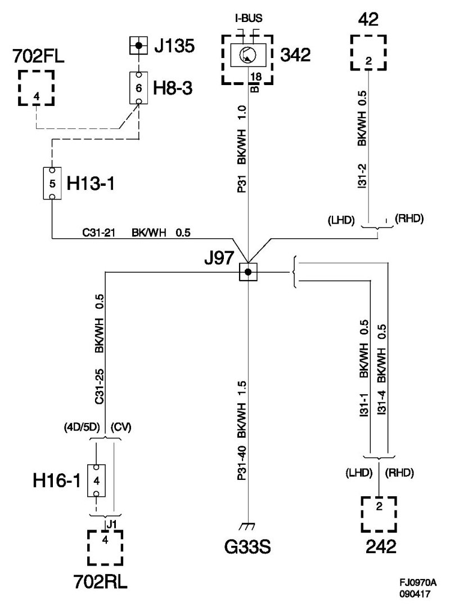
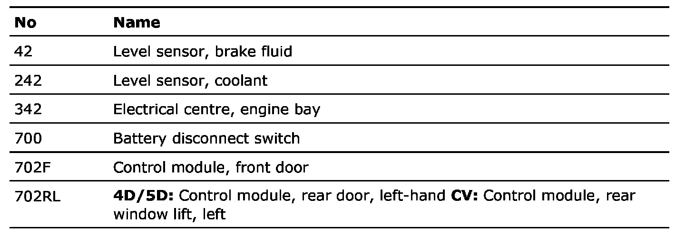

Crimp J97, Main Wiring Harness
Crimp J97, Main Wiring Harness
Location:
4D/5D: Approx. 120 mm from branching point grounding point G33P/S towards rear left door
CV: Approx. 70 mm from the branching point of grounding point G33P/S towards the left rear door

List of components

Crimp J135, inner door harness